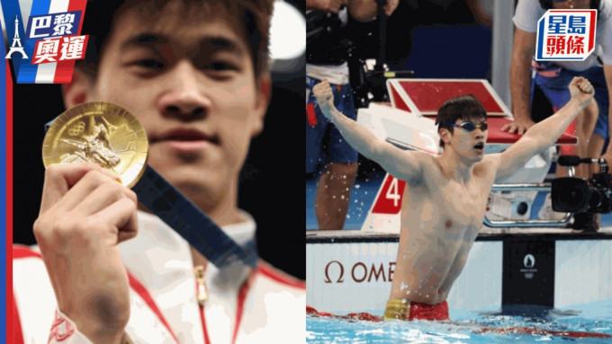
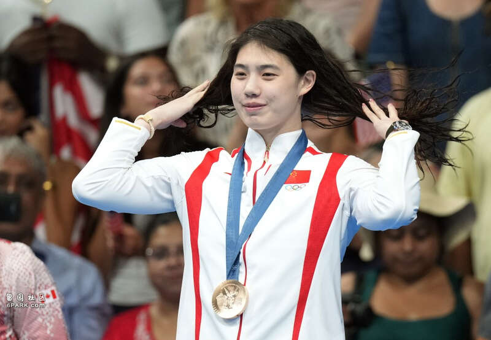
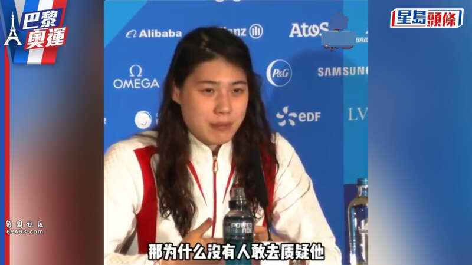
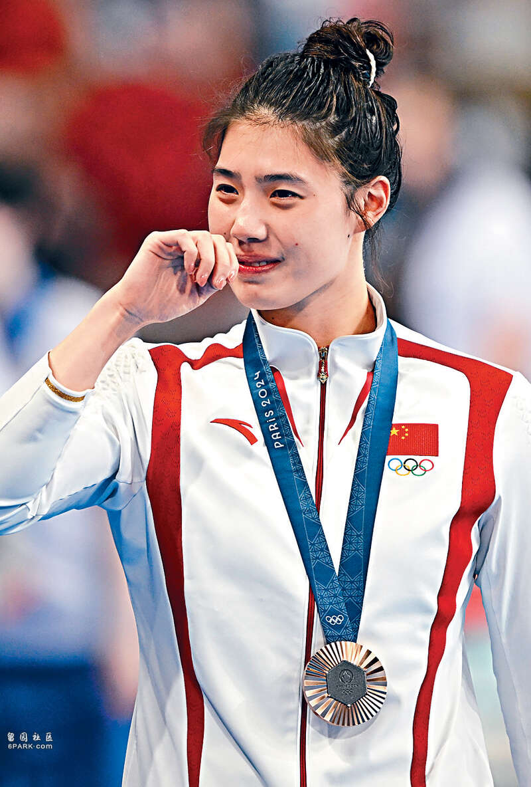
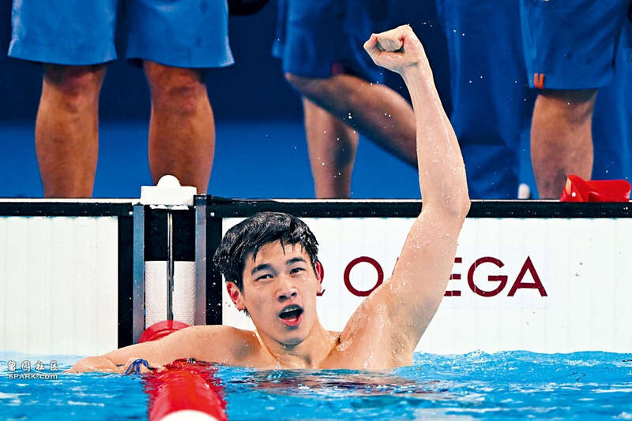
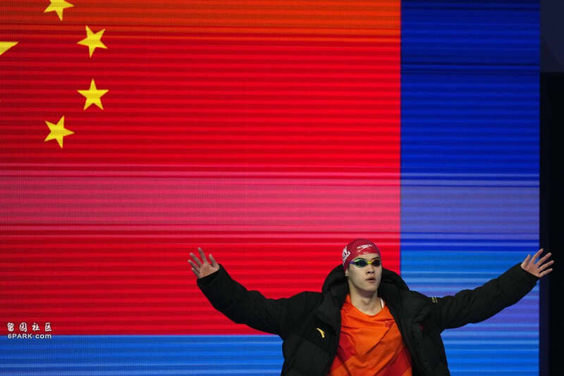
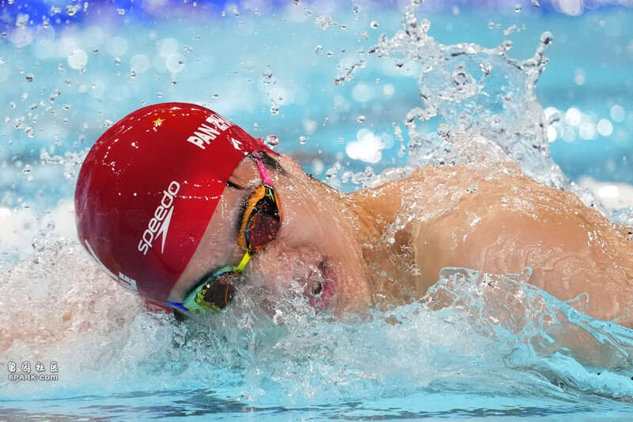
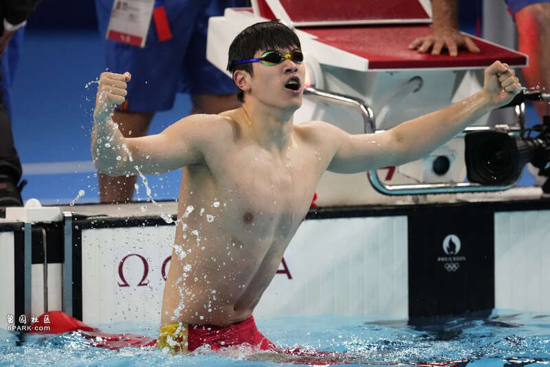

潘展乐在巴黎奥运以破世界纪录成绩夺金。
中国游泳队员打破世界纪录的成绩遭到外媒质疑，国际奥委会发言人马克·亚当斯星期五（8月2日）对此回应说，中国游泳队经受了全面的检测，是巴黎奥运会上接受兴奋剂检测最多的队伍。
根据中新社报道，在当天举行的新闻发布会上，有记者针对中国游泳队员打破世界纪录但遭到外媒质疑的情况提问，马克·亚当斯回答说，自今年1月至今，该队接受了600多次测试，他们经受了全面的检测。

中国「蝶后」张雨霏在巴黎奥运200米蝶泳决赛中，夺得铜牌。新华社

张雨霏正面反击外媒对中国泳手的禁药质疑。

张雨霏于女子100米蝶泳仅摘铜牌，领奖时眼泛泪光。

国家队泳手潘展乐于100米自由泳以破世绩姿态摘金。

国家队男飞鱼潘展乐为国家泳队在今届奥运的游泳项目作出金牌零的突破。美联社

潘展乐赢得100米自由泳金牌。美联社

潘展乐以46秒40打破世界纪录，这同时亦是今届在泳池内产生的第1项世界纪录。美联社
中国游泳男将潘展乐在本届巴黎奥运会男子100米自由泳决赛上，以46秒40最先触壁，为中国游泳队夺得本届赛会首枚金牌，也写下巴黎奥运的首个游泳世界纪录。
潘展乐的成绩也引来外媒质疑。一名澳大利亚记者星期五在女子200米蝶泳赛后发布会上说，潘展乐在男子100米自由泳决赛中的成绩让不少外媒认为「不可能完成」，问中国女子200米蝶泳铜牌得主张雨霏如何看待。张雨霏当即反击，称潘展乐的成绩没有任何问题，并质疑为什么没有人去质疑美国选手菲尔普斯和莱德基。
巴黎奥运会开幕前，世界泳联7月23日公布表示，中国游泳队接受最密集的兴奋剂检测，半年多平均每人被检测21次。